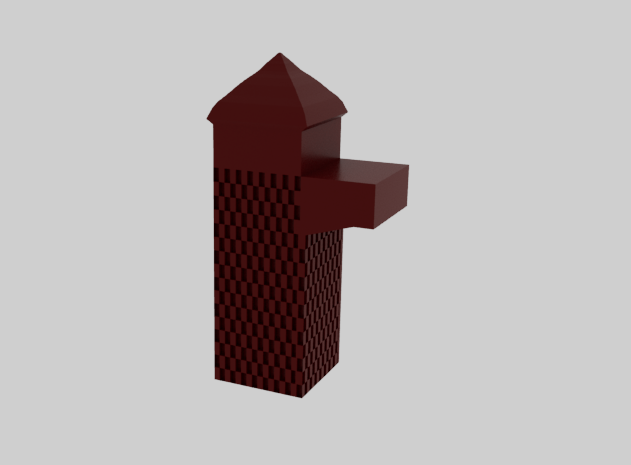
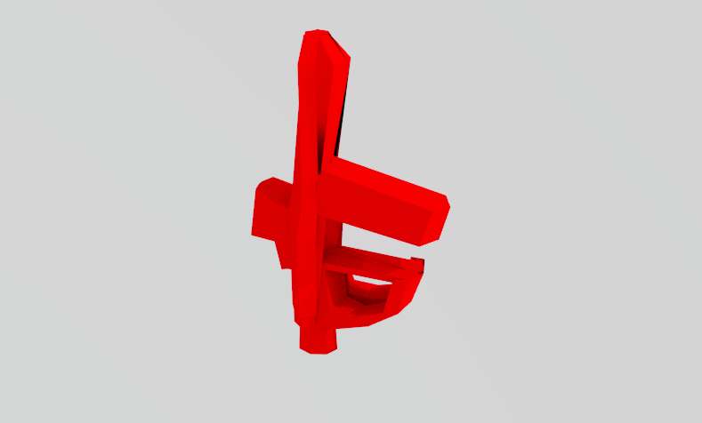
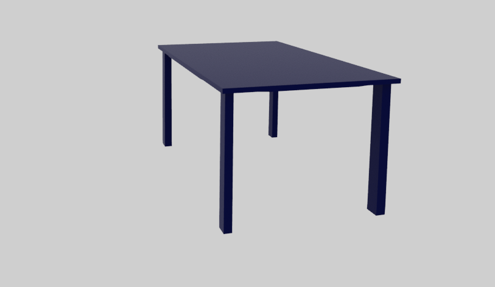
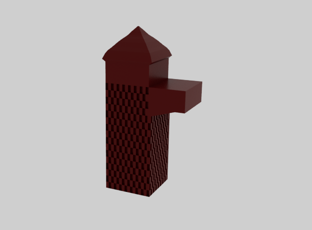
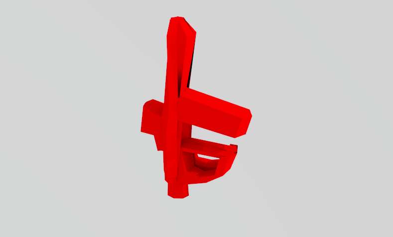
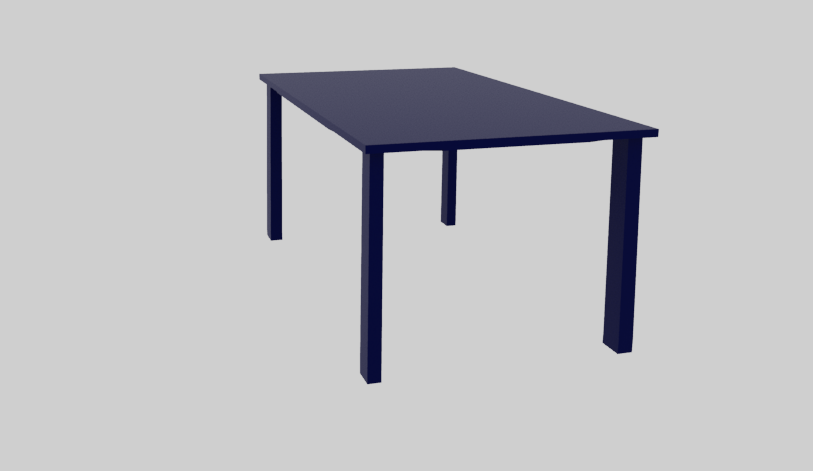
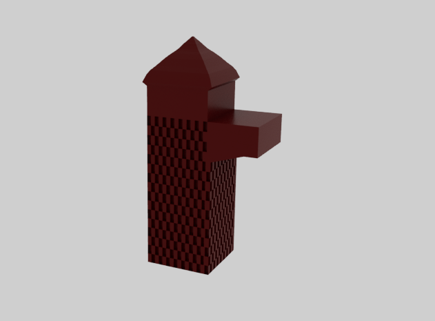
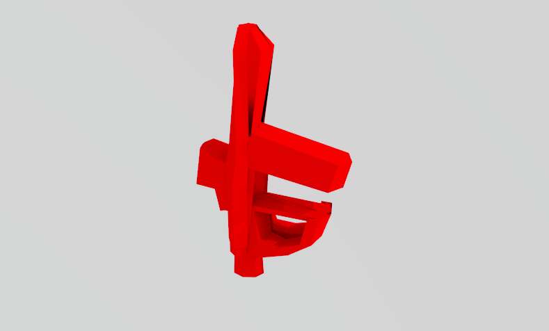
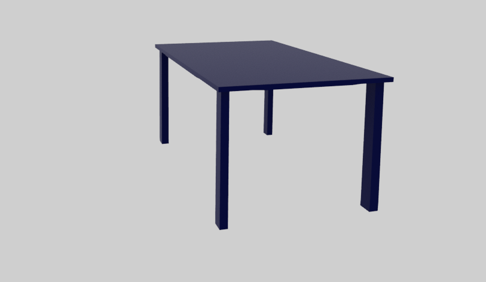

Definitions:
Flow: Does the player feel constantly productive, able to act and have those actions matter (advance their agenda) every turn? (productive) Fiero: Multiple big victory moments for players? (rewarding)
Flow in the game: Characters are always actively playing, trying to survive and kill zombies to get to the plant to end the zombies.
Fiero in the game: After killing someone, either on your side or on the zombie side, you get points that will help you advance your gun to get rid of zombies faster.
Core Mechanic: Move up to move forward, down to move backward, left to aim left, right to aim right.
Secondary Mechanic: Shake to send help signals to teammates and tap to shoot.
Progression: Advancing through the levels by killing the zombie and getting to the plant to stop zombies from coming.
The purpose of this game is we want to encourage team building and communication as well as exercise. We will measure the impact of this game by seeing how often people communicate and speak to each other. We will also be monitoring the number of points each team earns. We can measure the players’ heart rates to determine whether participants are getting in some exercise.
Here are the objects we 3D modeled using a 3D software called MAYA:


